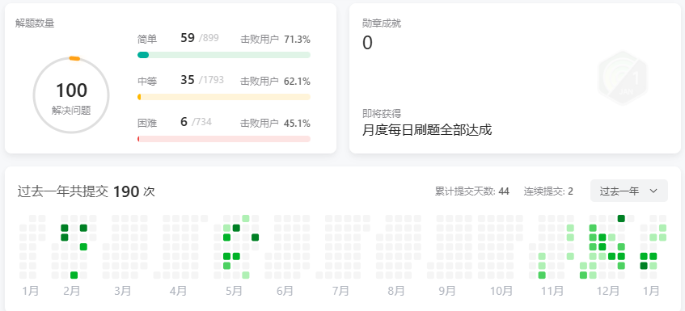

移除链表元素 1. 思路 题目：给你一个链表的头节点 head 和一个整数 val ，请你删除链表中所有满足 Node.val == val 的节点，并返回 新的头节点 。203. 移除链表元素 - 力扣（LeetCode）
移除操作，就是让节点next指针直接指向下下一个节点，对于单链表来说，指针只能指向下一个节点，因此，还需要判断头结点是否该被删除。移除的算法主要有迭代和递归。需要注意的是使用C，C++，不要忘了还要从内存中删除这两个移除的节点。
链表操作的两种方式：
直接使用原来的链表来进行删除操作。 设置一个虚拟头结点在进行删除操作。 2. 解法 Python
1 2 3 4 5 6 7 8 9 10 11 12 13 14 15 16 17 18 19 20 21 22 23 24 25 26 27 28 29 30 31 32 33 34 35 36 37 38 39 40 41 42 43 44 class Solution :def removeElements (self, head: Optional [ListNode], val: int ) -> Optional [ListNode]:next =head) while node.next : if node.next .val == val:next = node.next .next else :next return pre_node.next class Solution :def removeElements (self, head: Optional [ListNode], val: int ) -> Optional [ListNode]:if head is None : return headwhile cur.next :if cur.next .val == val:next = cur.next .next else :next return head.next if head.val == val else head class Solution3 :def removeElements (self, head: ListNode, val: int ) -> ListNode:if head is None :return headnext = self.removeElements(head.next , val)return head.next if head.val == val else head
C++
1 2 3 4 5 6 7 8 9 10 11 12 13 14 15 16 17 18 19 20 21 22 23 24 25 26 27 28 29 30 31 32 33 34 35 36 37 38 39 40 41 42 43 44 45 46 47 48 49 50 51 52 53 54 55 56 57 58 class Solution {public :ListNode* removeElements (ListNode* head, int val) {struct ListNode * pre_node = new ListNode (0 , head);struct ListNode * temp = pre_node;while (temp->next != NULL ){if (temp->next->val == val){else {return pre_node->next;class Solution {public :ListNode* removeElements (ListNode* head, int val) {if (head == nullptr ){return head;while (p->next){if (p->next->val ==val){else {return head->val == val ? head->next : head;class Solution {public :ListNode* removeElements (ListNode* head, int val) {if (head == nullptr ) {return head;removeElements (head->next, val);return head->val == val ? head->next : head;
3. 变种 (1) 题目： 有一个单链表的 head，我们想删除它其中的一个节点 node。给你一个需要删除的节点 node 。你将 无法访问 第一个节点 head。链表的所有值都是 唯一的 ，并且保证给定的节点 node 不是链表中的最后一个节点。237. 删除链表中的节点 - 力扣（LeetCode）
思路： 其中实质也是删除节点，删除链表中的节点的常见的方法是定位到待删除节点的上一个节点，修改上一个节点的 nextnext 指针，使其指向待删除节点的下一个节点，即可完成删除操作。但是该题不能访问头结点 ，所以不能进行遍历寻找然后删除。
解法： 在给定节点 node 的情况下，可以通过修改 node 的 next 指针的指向，删除 node 的下一个节点。但是题目要求删除 node，为了达到删除 node 的效果，只要在删除节点之前，将 node的节点值修改为 node.next的节点值即可。
PS：主打一个杀不了自己，就杀别人。这个题真是脑洞大开！！！
Python
1 2 3 4 5 6 7 8 9 10 11 12 13 14 class Solution :def deleteNode (self, node ):""" :type node: ListNode :rtype: void Do not return anything, modify node in-place instead. """ next .val next = node.next .next
C++
1 2 3 4 5 6 7 8 9 10 11 12 13 14 15 16 17 class Solution {public :void deleteNode (ListNode* node) delete (next);
(2) 题目： 给定一个已排序的链表的头 head ， 删除原始链表中所有重复数字的节点，只留下不同的数字 。返回 已排序的链表 。82. 删除排序链表中的重复元素 II - 力扣（LeetCode）
思路： 由于给定的链表是排好序的，因此重复的元素在链表中出现的位置是连续的，只需要对链表进行一次遍历，就可以删除重复的元素。由于链表的头节点可能会被删除，因此需要额外使用一个哑节点（dummy node）指向链表的头节点。
从指针 cur 指向链表的哑节点，随后开始对链表进行遍历。如果当前 cur.next 与 cur.next.next 对应的元素相同，需要将 cur.next 以及所有后面拥有相同元素值的链表节点全部删除。
记下这个元素值 x，随后不断将 cur.next 从链表中移除，直到 cur.next 为空节点或者其元素值不等于 x 为止。将链表中所有元素值为 x 的节点全部删除。
如果当前 cur.next 与 cur.next.next 对应的元素不相同，那么说明链表中只有一个元素值为 cur.next 的节点，那么我们就可以将 cur 指向cur.next。
当遍历完整个链表之后，我们返回链表的的哑节点的下一个节点 dummy.next 即可。
PS：需要注意 cur.next 以及 cur.next.next 可能为空节点，如果不加以判断，可能会产生运行错误。类似重复元素删除的题目，用变量记录重复元素值是很常见的方法。
Python
1 2 3 4 5 6 7 8 9 10 11 12 13 14 15 16 17 18 19 20 21 class Solution :def deleteDuplicates (self, head: Optional [ListNode] ) -> Optional [ListNode]:if not head:return head0 , head) while cur.next and cur.next .next : if cur.next .val == cur.next .next .val:next .val while cur.next and cur.next .val == x: next = cur.next .next else :next return dummy.next
C++
1 2 3 4 5 6 7 8 9 10 11 12 13 14 15 16 17 18 19 20 21 22 23 24 25 26 27 28 29 30 class Solution {public :ListNode* deleteDuplicates (ListNode* head) {struct ListNode * dummy = new ListNode (0 , head);struct ListNode * cur = dummy;if (head == nullptr )return head;while (cur->next && cur->next->next){if (cur->next->val == cur->next->next->val){int temp = cur->next->val;while (cur->next && cur->next->val == temp){else {return dummy->next;
简易版删除链表中重复元素： 83. 删除排序链表中的重复元素 - 力扣（LeetCode）
力扣100题 PS：插播，2024-1-16，力扣刷题刚好100题。
(3) 题目： 给你一个链表，删除链表的倒数第 n 个结点，并且返回链表的头结点。19. 删除链表的倒数第 N 个结点 - 力扣（LeetCode）
思路： 处理删除链表节点的方法大致分为三类：1）两次遍历，先计算出链表长度，然后再进行删除；2）栈存储，根据栈「先进后出」的原则，弹出栈的第 n 个节点就是需要删除的节点，并且目前栈顶的节点就是待删除节点的前驱节点；3）双指针，通过快慢指针，使用两个指针 first 和 second 同时对链表进行遍历，并且 first 比 second 超前 n 个节点。当 first 遍历到链表的末尾时，second 就恰好处于倒数第 n 个节点。
Python
1 2 3 4 5 6 7 8 9 10 11 12 13 14 15 16 17 18 19 20 21 22 23 24 25 26 27 28 29 30 31 32 33 34 35 36 37 38 39 40 class Solution :def removeNthFromEnd (self, head: Optional [ListNode], n: int ) -> Optional [ListNode]:0 , head)for i in range (n): next while first: next next next = second.next .next return dummy.next class Solution :def removeNthFromEnd (self, head: Optional [ListNode], n: int ) -> Optional [ListNode]:def getLength (head: ListNode ) -> int : 0 while head:1 next return length0 , head) for i in range (1 , length - n + 1 ): next next = cur.next .next return dummy.next
C++
1 2 3 4 5 6 7 8 9 10 11 12 13 14 15 16 17 18 19 20 21 22 23 24 25 26 27 28 29 30 31 32 33 34 35 36 37 38 39 40 41 42 43 44 45 46 47 48 49 50 51 52 53 54 55 56 57 class Solution {public :int getLength (ListNode* head) int length = 0 ;while (head){return length;ListNode* removeNthFromEnd (ListNode* head, int n) {new ListNode (0 , head);int length = getLength (head);for (int i=1 ; i<length-n+1 ; ++i){delete dummy; return ans;class Solution {public :ListNode* removeNthFromEnd (ListNode* head, int n) {new ListNode (0 , head);for (int i=0 ; i<n; ++i)while (first){delete dummy;return ans;
(4) 题目： 给你一个链表的头节点 head 。删除 链表的 中间节点 ，并返回修改后的链表的头节点 head 。长度为 n 链表的中间节点是从头数起第 ⌊n / 2⌋ 个节点（下标从 0 开始），其中 ⌊x⌋ 表示小于或等于 x 的最大整数。2095. 删除链表的中间节点 - 力扣（LeetCode）
对于 n = 1、2、3、4 和 5 的情况，中间节点的下标分别是 0、1、1、2 和 2 。 思路： 这个题目和（3）题类似，但是这个题目没有给出n的具体值，而是通过计算链表的中间节点来获取。但是同样可以使用两次遍历，但是使用双指针则需要进行一定的修改。
常见的找出链表中间节点的方法是使用快慢指针：即使用两个指针 fast 和 slow 对链表进行遍历，其中快指针 fast 每次遍历两个元素，慢指针 slow 每次遍历一个元素。这样在快指针遍历完链表时，慢指针就恰好在链表的中间位置。在本题中，还需要删除链表的中间节点，因此除了慢指针 slow 外，还需使用一个指针 pre 时刻指向 slow 的前一个节点。这样就可以在遍历结束后，通过 pre 将 slow 删除了。
PS：当链表中只有一个节点时，删除这个节点并返回空链表。如果节点不存在前一个节点，即 pre 是没有意义的，因此对于这种情况，在遍历前进行特殊判断，直接返回空指针。
Python
1 2 3 4 5 6 7 8 9 10 11 12 13 14 15 16 17 18 19 20 21 22 23 24 25 26 27 28 29 30 31 32 33 34 35 36 37 38 39 40 class Solution :def deleteMiddle (self, head: Optional [ListNode] ) -> Optional [ListNode]:def getLength (head: ListNode ) -> int : 0 while head:1 next return length0 , head)for i in range (length//2 ): next next = cur.next .next return dummy.next class Solution :def deleteMiddle (self, head: Optional [ListNode] ) -> Optional [ListNode]:if head.next is None : return None None while fast and fast.next : next .next next next = pre.next .next return head
C++
1 2 3 4 5 6 7 8 9 10 11 12 13 14 15 16 17 18 19 20 21 22 23 24 25 26 27 28 29 30 31 32 33 34 35 36 37 38 39 40 41 42 43 44 45 46 47 48 49 50 51 52 53 54 55 class Solution {public :int getLength (ListNode* head) int length = 0 ;while (head){return length;ListNode* deleteMiddle (ListNode* head) {new ListNode (0 , head);int length = getLength (head);for (int i=0 ; i<length/2 ; ++i){ delete dummy;return ans;class Solution {public :ListNode* deleteMiddle (ListNode* head) {if (head->next == nullptr )return nullptr ;nullptr ;while (fast && fast->next){return head;
(5) 题目： 给你一个链表的头节点 head，请你编写代码，反复删去链表中由 总和 值为 0 的连续节点组成的序列，直到不存在这样的序列为止。删除完毕后，请你返回最终结果链表的头节点。1171. 从链表中删去总和值为零的连续节点 - 力扣（LeetCode）
思路： 像这种计算某个区间的值可以采用前缀和的哈希表，前缀和的哈希表实现可以在O(1)时间内找到区间和为某个确定值target的区间。
建立一个 dummy 节点，指向 head，节点值为 0。遍历一遍链表，同时记录前缀和，以当前前缀和为 key，当前节点为 value，存入哈希表中。如果相同前缀和已经存在，就可以直接覆盖掉原有节点。
第二遍重新遍历链表，同时记录前缀和 prefix，哈希表中对应 prefix 的节点是最后一次出现相同前缀和的节点，即中间的这些节点的和为0，将这个节点的下一个节点，赋值给当前节点的下一个节点。
最后我们返回 dummy 节点的下一节点，作为新的头节点。注意满足题目要求的答案不唯一，可以返回任何满足题目要求的答案。
Python
1 2 3 4 5 6 7 8 9 10 11 12 13 14 15 16 17 18 19 20 21 22 class Solution :def removeZeroSumSublists (self, head: Optional [ListNode] ) -> Optional [ListNode]: 0 ,head) 0 , dummy while cur:next 0 , dummywhile cur: next = seen[prefix].next next return dummy.next
C++
1 2 3 4 5 6 7 8 9 10 11 12 13 14 15 16 17 18 19 20 21 22 23 24 25 26 27 28 29 30 31 32 33 34 35 class Solution {public :ListNode* removeZeroSumSublists (ListNode* head) {int prefix = 0 ;new ListNode (0 , head);int , ListNode*> seen;while (cur){0 , cur = dummy;while (cur){delete dummy;return ans;